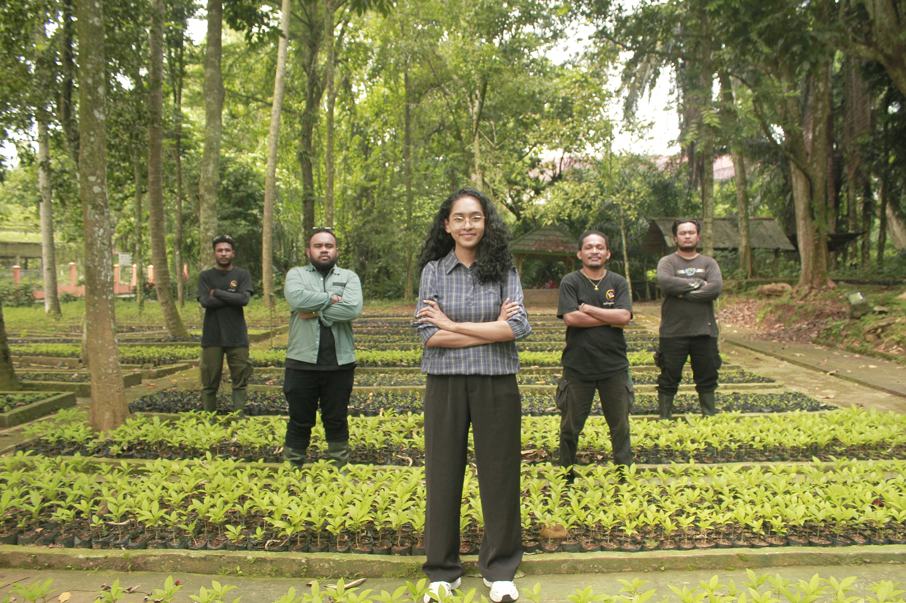
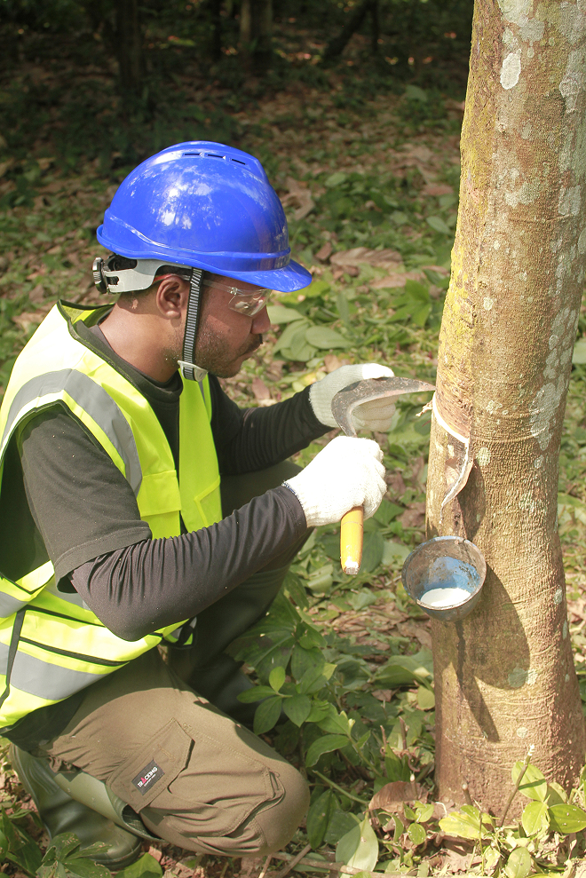
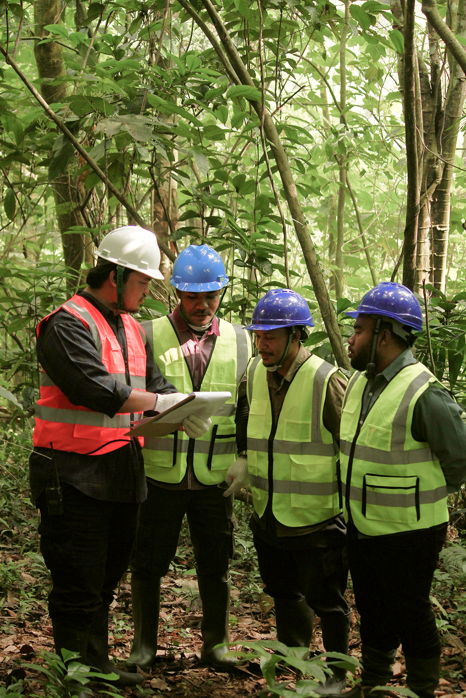
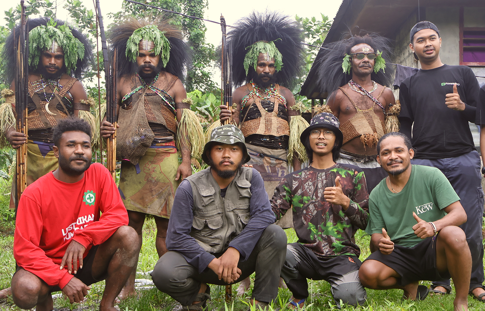
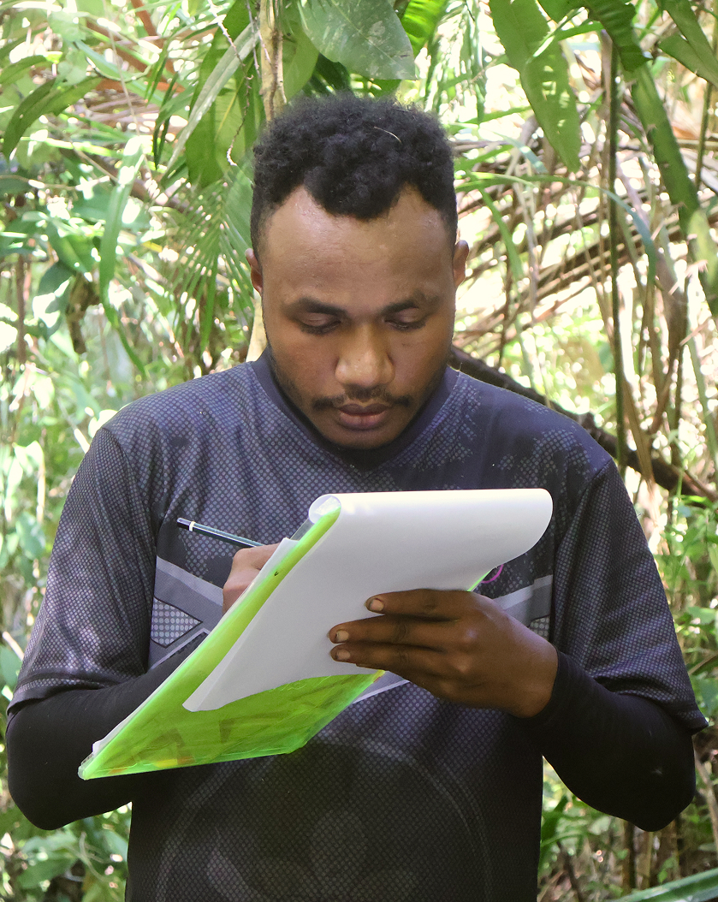

What the forest can support
- Area Utilisation
- Timber Forest Products
- Non-Timber Forest Products
- Environmental Services
ForestPro develops the potential of forest areas through relevant innovation and regulatory compliance, with long-term sustainability guiding every decision.
From Potential to Practice
Responsible forest operations depend on more than the resources within an area. Permits, planning, field teams, community participation, and continuous monitoring need to work as one.
What the forest can support
What responsible management requires
Who We Are
ForestPro is a strategic forestry partner for forest-area permit holders and landowners in Forest and Other Land Uses. We help clients operate legally and efficiently while aligning business sustainability with national policy and global environmental standards.
Our professional team tailors each engagement to the client's needs, supporting the work from planning through field operations.

What We Do
From the first strategic decision to field execution and the systems behind it, ForestPro brings every part of responsible forest management into one connected approach.
01 / Direction
We bring clarity to complex decisions, aligning regulation, business ambition, and the long-term potential of every forest area.
02 / Delivery
We turn plans into coordinated action, bringing the right people, resources, and field execution together to deliver measurable progress.
03 / Continuity
We build the systems that keep forest operations consistent, traceable, and ready to evolve as standards and opportunities change.
Our Focus Areas
ForestPro combines productive land use, forest-based commodities, and environmental services in one planned, legal, and sustainable approach.
.jpg)
ForestPro supports land uses such as agroforestry, silvofishery, and silvopasture while protecting the ecological function of the area.

ForestPro connects responsible wood and non-wood commodity development with compliant planning, harvesting, and certification.

ForestPro supports environmental services related to ecotourism, biodiversity, and carbon projects for national and international markets.
These opportunities can develop together within the same forest area.
Sustainable Outcomes
Lasting value depends on the relationship between ecological integrity, community interests, and accountable governance.
Environmental Stewardship
ForestPro supports management decisions that protect biodiversity, ecological functions, and the long-term productivity of forest landscapes.

Community & Shared Value
ForestPro brings community participation, local knowledge, and livelihood considerations into responsible forest planning, helping align long-term business continuity with the interests of surrounding communities.

Responsible Governance
Clear planning, regulatory alignment, transparent documentation, and measurable standards help turn sustainability commitments into responsible field practice.

Talk with ForestPro about regulatory alignment, operational planning, and sustainable implementation for your forest area or land.